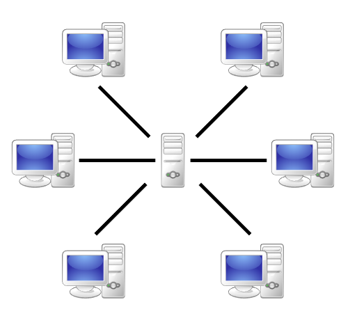
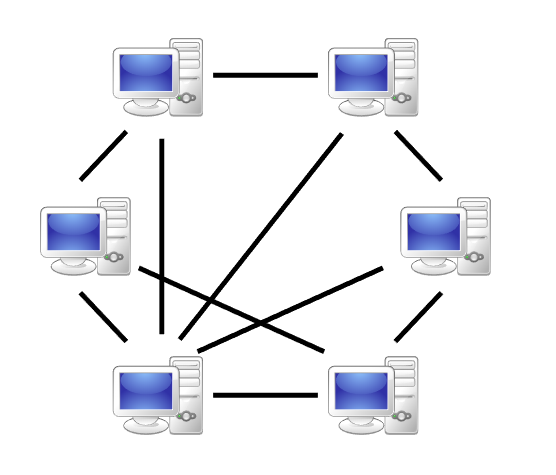

Web-RTC

Story time
Web Real-Time Communication
WebRTC
navigator.mediaDevices.getUserMedia(settings).then(use it)
navigator.mediaDevices.getUserMedia({ video: true, audio: false })
.then(function(mediaStream) {
var video = document.querySelector('video');
video.srcObject = mediaStream;
}

Automatic gain control (AGC)
Noise reduction/suppression
Conceal packet loss
Clean up noisy images

.video-css-element{
filter: contrast(200%);
}
filter: drop-shadow(16px 16px 20px red) invert(75%);
var myRtcConnection = new RTCPeerConnection(configuration);

Direct comunication

More than two clients
myDataChannel = myRtcConnection
.createDataChannel("label", dataChannelOptions);
var wss = new WebSocketServer({port: 9095});
wss.on('connection', function(connection) {
connection.on('message', function(message) {
connection.send(message)
connection.on("close", function() {
var wsConnection = new WebSocket('ws://localhost:9095/');
wsConnection.onopen = () => {}
wsConnection.onmessage = (newMessage) => {
var data = JSON.parse(newMessage.data);
// handle message
}
wsConnection.send( JSON.stringify(message) );
navigator.mediaDevices.getUserMedia({ video: true, audio: true }).then(myStream => {
// use it
}
STUN is used for finding your public IP and port for establishing a connection
var myRtcConnection = new RTCPeerConnection(configuration);
myRtcConnection.addStream(myStream);
var dataChannelOptions = {
reliable:true
};
var myDataChannel = myRtcConnection
.createDataChannel("label", dataChannelOptions)
myRtcConnection.ondatachannel = (event) => {
var receiveChannel = event.channel;
receiveChannel.onmessage = (event) => {
// got a message
}
}
myDataChannel.send( "Some data" );
Now we are ready to call some one
Create and send an offer (RTCSessionDescription)
A description of who you are, and what you support (your browser)
myRtcConnection.createOffer().then(offer => {
sendMessageToServer(offer, "User B");
myRtcConnection.setLocalDescription(offer);
}
myRtcConnection.setRemoteDescription(offer);
myRtcConnection.createAnswer((answer) => {
sendMessageToServer(answer, "User A");
myRtcConnection.setLocalDescription(answer);
}
myRtcConnection.setRemoteDescription(answer);
For finding the shortest path between your two computers
Interactive Connectivity Establishment (ICE)
myRtcConnection.onicecandidate = (event) => {
sendMessageToServer(event.candidate, "Other User");
}
// on the other client:
myRtcConnection.addIceCandidate(new RTCIceCandidate(candidate))
// Automagick
Summary
Shared backend
Video, sound, data
PeerConnection with STUN (local)
Send offer, and receive answer
ICE candidates for mapping the network
Maybe fall back to TURN
Connected!
var dataChannelOptions = {
reliable:true
};
var myDataChannel = myRtcConnection
.createDataChannel("label", dataChannelOptions);
myRtcConnection.ondatachannel = (event) => {
var receiveChannel = event.channel;
receiveChannel.onmessage = (event) => {
// got a message
}
}
myDataChannel.send( "Some data" );
addChatMessage(message);
let sendObject:DataChannelPacket = {
type: "chat",
data: message
};
myDataChannel.send( JSON.stringify( sendObject ) );
// sender
var fileReader = new FileReader();
var fileSlice = file.slice(offset, offset + chunckSize);
fileReader.readAsArrayBuffer(fileSlice);
// on the receiving side
incommingFileBuffer.push(arrayBuffer);
// when done on the receiving side
var recivedFile = new Blob(this.incommingFileBuffer);
From 2011
ONLY ask for video when you need it, and the user underrstands
www.github.com/JGH153